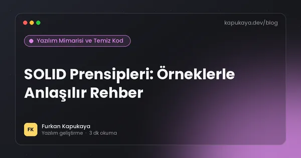
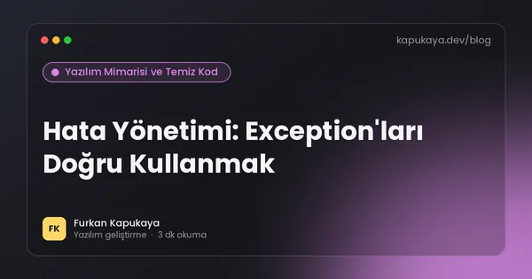
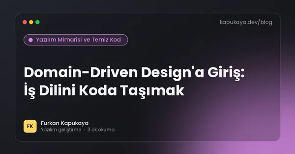
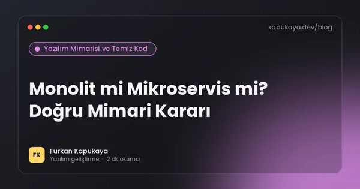
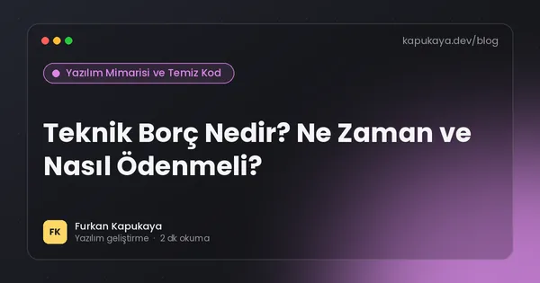
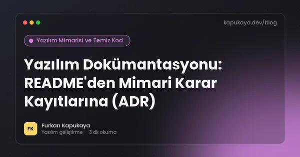

Yazılım Mimarisi ve Temiz Kod
SOLID, tasarım desenleri, katmanlı mimari, refactoring, code review ve teknik borç; yıllar geçse de geçerliliğini koruyan yazılım ilkeleri.
Bu konuda okuma yolları:Temiz kod yolculuğu6 yazıYazılım mimarisine giriş6 yazı
13 yazı

Temiz Kod (Clean Code) Nedir? Okunabilir Kodun 10 Kuralı
Temiz kodun ne olduğu, neden önemli olduğu ve küçük fonksiyonlar, anlamlı isimler, tek sorumluluk, yorum kullanımı ve test gibi okunabilir kodun 10 pratik kuralı.
Yazıyı oku
Kodda İsimlendirme: Değişken, Metot ve Sınıf Adı Nasıl Seçilir?
Yazılımda iyi isimlendirmenin kuralları; değişken, metot, sınıf ve boolean isimleri, kısaltmalardan kaçınma, Türkçe mi İngilizce mi kararı ve C# isimlendirme standartları.
Yazıyı oku
DRY, KISS ve YAGNI: Yazılımda Sadeliğin Üç İlkesi
Tekrar etme (DRY), basit tut (KISS) ve ihtiyacın olmayanı yapma (YAGNI) ilkelerinin anlamı, örnekleri, yanlış uygulanmaları ve birbirleriyle dengesi.
Yazıyı oku
SOLID Prensipleri: Örneklerle Anlaşılır Rehber
Nesne yönelimli tasarımın beş temel ilkesi SOLID: tek sorumluluk, açık-kapalı, Liskov, arayüz ayrımı ve bağımlılıkların tersine çevrilmesi; C# örnekleri ve aşırıya kaçmadan uygulama.
Yazıyı oku
Refactoring Nedir? Davranışı Bozmadan Kodu İyileştirmek
Refactoring'in tanımı, ne zaman yapılması gerektiği, kod kokuları, güvenli refactoring adımları, testlerin rolü ve büyük yeniden yazım (rewrite) yerine küçük adımların avantajı.
Yazıyı oku
Code Review Nasıl Yapılır? Etkili Kod İnceleme Rehberi
Kod incelemenin amacı, neye bakılması gerektiği, pull request boyutu, yapıcı yorum yazma, otomasyonun rolü ve yapay zekâ destekli kod incelemesinde dikkat edilecekler.
Yazıyı oku
Hata Yönetimi: Exception'ları Doğru Kullanmak
Yazılımda hata yönetiminin temel ilkeleri; exception ne zaman fırlatılır, ne zaman yakalanır, boş catch tehlikesi, global hata yakalama, loglama, kullanıcıya hata mesajı ve Result deseni.
Yazıyı oku
Tasarım Desenleri (Design Patterns): En Çok Kullanılan 8 Desen
Yazılımda tasarım desenlerinin ne olduğu ve gerçek projelerde en sık kullanılan Strategy, Factory, Repository, Decorator, Observer, Adapter, Singleton ve Builder desenlerinin pratik örnekleri.
Yazıyı oku
Katmanlı Mimari ve Clean Architecture: Uygulamayı Doğru Bölmek
Katmanlı mimarinin (sunum, iş, veri) mantığı, Clean Architecture ve bağımlılık kuralı, .NET projelerinde örnek klasör yapısı, artıları, eksileri ve dikey dilim (vertical slice) alternatifi.
Yazıyı oku
Domain-Driven Design'a Giriş: İş Dilini Koda Taşımak
Domain-Driven Design (DDD) yaklaşımının temel kavramları; ortak dil, bounded context, entity, value object, aggregate ve domain event; hangi projelerde faydalı olduğu.
Yazıyı oku
Monolit mi Mikroservis mi? Doğru Mimari Kararı
Monolit ve mikroservis mimarilerinin karşılaştırması, mikroservislerin gizli maliyetleri, modüler monolit yaklaşımı ve küçük ile orta ölçekli projeler için gerçekçi öneriler.
Yazıyı oku
Teknik Borç Nedir? Ne Zaman ve Nasıl Ödenmeli?
Teknik borcun tanımı, türleri, faizinin nasıl ödendiği, belirtileri, ölçülmesi, yönetilmesi ve teknik olmayan yöneticilere anlatılması için pratik bir rehber.
Yazıyı oku
Yazılım Dokümantasyonu: README'den Mimari Karar Kayıtlarına (ADR)
Yazılım projelerinde hangi dokümantasyonun gerçekten işe yaradığı; iyi bir README, kurulum rehberi, mimari karar kayıtları (ADR), API dokümantasyonu ve dokümanı güncel tutma yöntemleri.
Yazıyı oku
Aramanızla eşleşen yazı bulunamadı. Farklı bir kelime deneyin veya tüm yazıları gösterin.